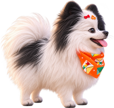
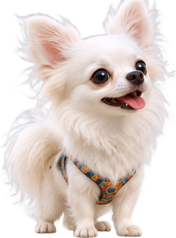
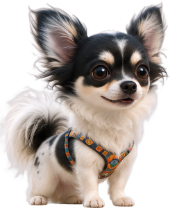

A história
Na Casa de Cultura da vila abre uma exposição de quadros do Van Gogh. A Tinta, cachorrinha da pintora da vila, perdeu o Girassol de Apito: o Furtão atirou o brinquedo pela moldura da Noite Estrelada e ele sumiu lá dentro.
O faro do Timtim mostra o rastro de cheiro entrando na tela. Timtim, Zara e Elvis pulam pela moldura. Lá dentro, quem está com o girassol é o Corvo-Borrão, um corvo do trigal feito de tinta preta grossa que guarda tudo o que é amarelo e brilha.

Timtim
Zara
ElvisOs três entram no quadro com o desenho de sempre. Só o mundo é pintado em pinceladas, para o Timtim continuar sendo o Timtim.
Cor e sentimento
O chão é amarelo do começo ao fim: girassol, trigo e o toldo do café. O céu vai escurecendo trecho a trecho, do amarelo-claro dos girassóis até o azul-cobalto da noite estrelada, então a fase também conta a passagem do dia para a noite. O sentimento é deslumbramento com um pouco de vertigem: tudo pulsa e gira.
A ação nova: o redemoinho
Cada fase ensina uma única ação nova. Nesta, os redemoinhos do céu pegam o Timtim e giram com ele. Apertar o pulo solta o Timtim na direção em que ele está indo naquele instante: acertar a hora é mirar.
Depois de solto, ele pode planar com a bandana, que ele aprendeu no Arraial. Os redemoinhos dão uma volta a cada compasso da valsa, então quem pula no ritmo da música acerta mais.
Experimente ao lado: clique, toque ou aperte Espaço para soltar o Timtim e acertar a estrela.
O caminho, trecho por trecho
O Quarto entrada
O Timtim sai de uma moldura dourada para dentro do quarto torto de Arles. O chão inclinado vira rampa, e a cama e as cadeiras são plataformas. No quadro da parede está o primeiro redemoinho, pequeno, para aprender a soltar na hora certa.
Os Girassóis
Cabeças de girassol gigantes servem de plataforma e viram devagar seguindo o sol: a que está de frente segura, a que fica de perfil derruba. Um redemoinho alto leva por cima do vaso.
O Trigal com Corvos
O trigo ondula e as rajadas empurram o Timtim. Os corvos fazem o papel dos pombos e das galinhas: mergulham em diagonal, e a sombra no chão avisa onde vão cair. São três caminhos de terra, e um deles leva a um segredo.
O Terraço do Café
O toldo amarelo é cama elástica, e as mesas e cadeiras viram escada. As primeiras estrelas acendem no céu. No fim, um redemoinho lança o Timtim para cima.
A Noite Estrelada chefão
Uma corrente de redemoinhos sobe até o céu. As estrelas são degraus que piscam, e o cipreste é uma chama escura para escalar. No alto do morro, sobre a vila adormecida, espera o Corvo-Borrão.
O chefão: o Corvo-Borrão
Um corvo enorme feito de tinta preta grossa, que guarda o Girassol de Apito no topo do cipreste. A luta tem três rodadas, e ele fica mais rápido a cada acerto, como o lobo-guará.
Risca uma sombra no chão e desce em diagonal. Quem sai da sombra escapa.
Sacode a tinta das asas. As gotas mancham o chão e deixam o Timtim lento, como o chocolate da fase 1.
Bate as asas, empurra o Timtim e apaga por alguns segundos as plataformas mais perto, que viram tela crua.
Depois de cada ventania ele pousa no cipreste para admirar o girassol. É a hora: soltar-se de um redemoinho e acertar as costas dele.
Os amigos ajudam do chão: a Zara late e espanta os corvinhos que vêm junto, e o Elvis joga tubos de tinta amarela que repintam as plataformas apagadas. No fim, o corvo larga o girassol, o céu inteiro gira e devolve os três à Casa de Cultura.
Para achar e colecionar
- Biscoitos com contorno grosso de pincel, para combinar com o mundo pintado.
- Três tubos de tinta dourados (amarelo, azul e vermelho) no lugar dos biscoitos dourados.
- O brinquedo perdido, o Girassol de Apito: "É da Tinta, a cachorrinha da pintora. Apita toda vez que alguém aperta, e o Furtão não parava de apertar."
- A assinatura "Vincent" escondida atrás do vaso dos girassóis: pisar nela abre um atalho.
- Quatro cartas ao Theo, como o correio elegante do Arraial, com bilhetes engraçados dos cães da vila.
Música
Uma valsa em três tempos a 84 batidas por minuto, com piano, acordeão e cordas beliscadas. A fase segue o compasso: um redemoinho dá uma volta inteira a cada compasso, e os girassóis viram no tempo forte.
Como fazer a arte
O cenário pintado sai do Google Flow, que não cobra pelas imagens, quando o limite de uso voltar. Antes de gerar, eu te mostro a lista de imagens e espero o seu ok. Os personagens continuam com o desenho deles, e as pinceladas do fundo se mexem por um filtro do jogo.